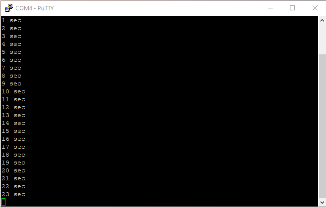

uptime command.
$ man -k uptime uptime (1) - Tell how long the system has been running.I am going to make a quick prototype first to validate the concept.
volatile unsigned uptime ; /* seconds elapsed since boot */
#ifdef LED_ON
static void userLEDtoggle( void) {
GPIO( LED_IOP)[ ODR] ^= 1 << LED_PIN ; /* Toggle User LED */
}
#endif
void SysTick_Handler( void) {
uptime += 1 ;
#ifdef LED_ON
userLEDtoggle() ;
#endif
}
The global variable uptime is marked volatile, the
compiler needs this information to avoid optimization as the value changes
concurrently when an interrupt is triggered.
I move the user LED toggling code to a dedicated local function
userLEDtoggle() as this is not the only task of
SysTick_Handler() anymore and a call to toggle the LED is needed
during initialization. I adjust the initialization code accordingly.
I write a first uptime.1.c to print the count of seconds every time
the uptime counter value changes.
/* uptime.1.c -- tells how long the system has been running */
#include <stdio.h>
extern volatile unsigned uptime ;
extern void kputc( unsigned char c) ;
void kputu( unsigned u) {
unsigned r = u % 10 ;
u /= 10 ;
if( u)
kputu( u) ;
kputc( '0' + r) ;
}
int main( void) {
static unsigned last ;
for( ;;)
if( last != uptime) {
last = uptime ;
kputu( last) ;
puts( " sec") ;
} else
__asm( "WFI") ; /* Wait for System Tick Interrupt */
}
As before for kputc(), the implementation of kputu()
to print an unsigned integer in decimal format is not optimal but still
functional.
SRCS = startup.c uplow.1.c uptime.1.cUnfortunately, when I try to build an executable, the link phase fails.
$ make f030f4.elf D:\Program Files (x86)\GNU Arm Embedded Toolchain\arm-gnu-toolchain-14.2.rel1-mi ngw-w64-i686-arm-none-eabi\bin\arm-none-eabi-ld.exe: uptime.1.o: in function `kp utu': D:\home\Projects\stm32bringup/uptime.1.c:13:(.text+0x6): undefined reference to `__aeabi_uidivmod' D:\Program Files (x86)\GNU Arm Embedded Toolchain\arm-gnu-toolchain-14.2.rel1-mi ngw-w64-i686-arm-none-eabi\bin\arm-none-eabi-ld.exe: D:\home\Projects\stm32bring up/uptime.1.c:14:(.text+0x14): undefined reference to `__aeabi_uidiv' make: *** [Makefile:49: f030f4.elf] Error 1The compiler has generated code that references two functions
__aeabi_uidivmod and __aeabi_uidiv when compiling
the lines 13 and 14 of uptime.1.c.
unsigned r = u % 10 ;
u /= 10 ;
This happens because the compiler generates code for Cortex-M0 which has
no integer division support. So integer division needs to be implemented
by code as it is not supported by hardware.
I need to pass the linker a reference to GNU Arm Embedded Toolchain
library for Cortex-M0. The library file is libgcc.a, the option -l and
-L of the linker tell what the library name is (-lgcc => libgcc.a) and
where to look for it.
LIBDIR = $(GCCDIR)/lib/gcc/arm-none-eabi/14.2.1/thumb/v6-m/nofp
LIB_PATHS = -L$(LIBDIR)
LIBS = -lgcc
$(PROJECT).elf: $(OBJS)
@echo $@
$(LD) -T$(LD_SCRIPT) $(LIB_PATHS) -Map=$(PROJECT).map -cref -o $@ $^ $(LIBS)
$(SIZE) $@
$(OBJDUMP) -hS $@ > $(PROJECT).lst
Once the Makefile has been updated, the build finish successfully.
$ make
f030f4.elf
text data bss dec hex filename
769 0 8 777 309 f030f4.elf
f030f4.hex
f030f4.bin
Checking the linker produced map file, f030f4.map, I can see which
library (libgcc.a) but also which modules in the library (
_udivsi3.o and _dvmd_tls.o) have been used to resolve the
symbols (__aeabi_uidiv and __aeabi_idiv0).
Archive member included to satisfy reference by file (symbol)
D:/Program Files (x86)/GNU Arm Embedded Toolchain/arm-gnu-toolchain-14.2.rel1-mi
ngw-w64-i686-arm-none-eabi/lib/gcc/arm-none-eabi/14.2.1/thumb/v6-m/nofp\libgcc.a
(_udivsi3.o)
uptime.1.o (__aeabi_uidiv)
D:/Program Files (x86)/GNU Arm Embedded Toolchain/arm-gnu-toolchain-14.2.rel1-mi
ngw-w64-i686-arm-none-eabi/lib/gcc/arm-none-eabi/14.2.1/thumb/v6-m/nofp\libgcc.a
(_dvmd_tls.o)
D:/Program Files (x86)/GNU Arm Embedded Toolchain/
arm-gnu-toolchain-14.2.rel1-mingw-w64-i686-arm-none-eabi/lib/gcc/arm-none-eabi/1
4.2.1/thumb/v6-m/nofp\libgcc.a(_udivsi3.o) (__aeabi_idiv0)

uptime and found an extra
dependency to Gnu Arm Embedded Toolchain: some modules included in
libgcc.a have to be included at link time as the chipset I am using has
no support for integer division. At this stage I will reuse the library as it
is, but I know where to look in the map file generated by the linker to find
which modules are included. If I ever need a better control of the link phase,
I can use ar to extract locally those modules from the library.
Next, I will write uptime with a
better structure.